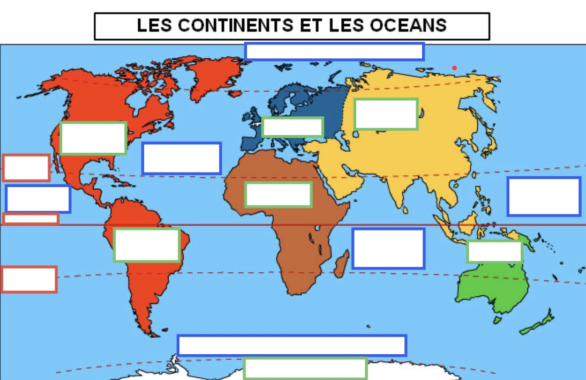

Comment s'orienter dans l'espace et dans le temps ?
I. Les points cardinaux
Point cardinal
Synonyme(s)
Position
Nord 🔼
Boréal, Septentrional
En haut
Sud 🔽
Austral, Méridional
En bas
Est ▶
Oriental
À droite
Ouest ◀
Occidental
À gauche
💡 Moyen mnémotechnique : ORANGE — le O est avant le E dans l'alphabet → Ouest à gauche, Est à droite.
II. Les continents et les océans
🗺️ Carte numérotée — repère chaque zone
Continent
Océan
Ligne

Les numéros ci-dessous correspondent aux cases de la carte (vert = continent, bleu = océan, rouge = ligne).
N°
Élément
Type
1
Amérique du Nord
🌍 Continent
2
Amérique du Sud
🌍 Continent
3
Europe
🌍 Continent
4
Afrique
🌍 Continent
5
Asie
🌍 Continent
6
Océanie
🌍 Continent
7
Antarctique
🌍 Continent
8
Océan Atlantique
🌊 Océan
9
Océan Pacifique (côté Est)
🌊 Océan
10
Océan Pacifique (côté Ouest)
🌊 Océan
11
Océan Indien
🌊 Océan
12
Océan Glacial Antarctique
🌊 Océan
13
Tropique du Cancer
☀️ Ligne
14
Équateur
☀️ Ligne
15
Tropique du Capricorne
☀️ Ligne
🎮 Exercice : associe chaque numéro à son nom
Fais glisser (ou appuie longuement sur mobile) chaque étiquette vers la case numérotée qui lui correspond.
Amérique du Nord
Amérique du Sud
Europe
Afrique
Asie
Océanie
Antarctique
Océan Atlantique
Pacifique (Est)
Pacifique (Ouest)
Océan Indien
Gl. Antarctique
Tropique du Cancer
Équateur
Tropique du Capricorne
III. La frise chronologique
Préhistoire
Antiquité
Moyen Âge
Époque moderne
Époque contemporaine
-4M → -3000
-3000 → 476
476 → 1492
1492 → 1789
1789 → auj.
⭐ En 5ème : Moyen Âge (476–1492) et Époque moderne (1492–1789)
IV. Moyens mnémotechniques
🌍 Continents : "Les 2 Américains Eric et Antoine sont Allés en Orbite"
2 Américains = Am. Nord + Am. Sud | Eric = Europe | Antoine = Afrique Allés = Asie | Orbite = Océanie | + Antarctique (tout seul en bas !)
🌊 Océans :
• Pacifique écrit ×2 → la Terre est ronde !
• Atlantique coincé entre les Amériques et l'Europe-Afrique
• Antarctique a plus de lettres qu'Arctique → plus lourd → il est en bas (Sud)
☀️ Tropiques :
• Cancer = 6 lettres → léger → en HAUT (Nord)
• Capricorne = 10 lettres → lourd → tombe en BAS (Sud)